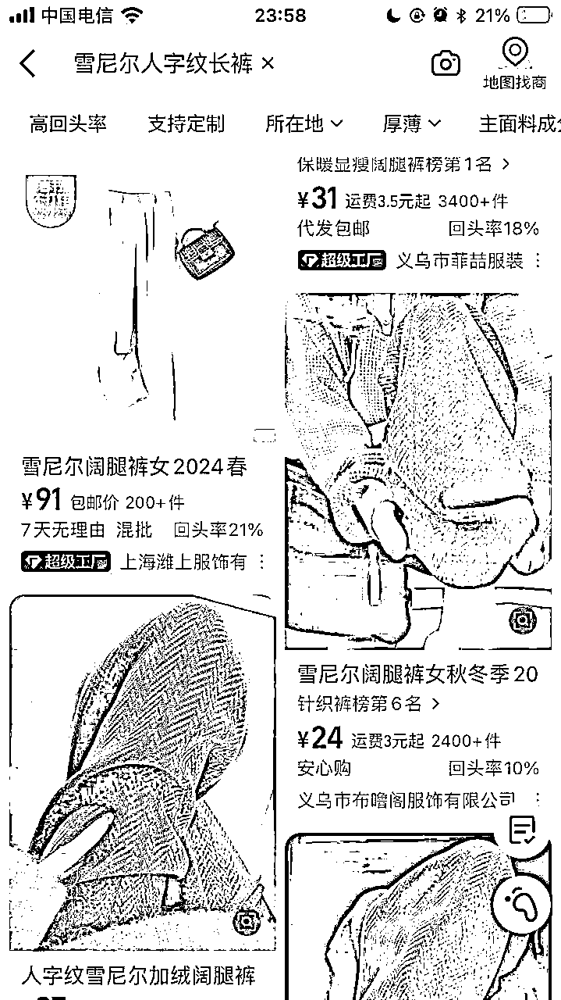

来源：https://had30wm6b1j.feishu.cn/docx/B1ssdaCnfoOAXEx0q4xcuZL0nxe
一个项目有很多种拆解方式，但一定会涉及流量和产品，两个关键环节。
所以，当我们能搞清楚流量怎么来，产品怎么解决以后，就能知道这个项目大概长什么样子；再通过核算成本与利润，就能知道这个项目是否值得做；最后通过拆解可达路径以及矩阵玩法，就能知道这个项目自己能不能做，有多少放大空间。
以下是4个项目拆解需要解决的核心问题：
✅流量怎么运营？
✅产品怎么解决？
✅利润怎么核算？
✅项目如何做&如何放大？
接下来我们会以-一周无休为例，为大家进行拆解。
账号：一周无休
类目：女装裤子
带货形式：通过视频图文起号，主要以视频为主，日常更新，视频挂车。
商品特点：百元内、休闲运动裤、舒服
选择该账号拆解的原因：
该账号免费流量主要来自视频，下面将重点分析这个板块，并且通过三方软件，查看付费流量的占比情况，从而得出一个完整结论。
文案：不得不说 质感好棒 才49的纹理感雪尼尔裤子
标签：#人字纹裤子#垂感裤子#雪尼尔阔腿裤#秋冬裤子#秋冬穿搭 #灰色系穿搭
数据：点赞30、收藏8、评论0
视频文案：分享一条穿了整个冬天的裤子，纹理很清晰很有质感，灰色很显白的，简单遮胯显腿长，梨形和小个子姐们放心冲
总结：梨形和小个子姐妹
文案：姐妹们要的冬天早春都能穿的灰裤子来啦、格雷系穿搭真的会永远喜欢
标签：#人字纹裤子#垂感裤子#雪尼尔阔腿裤#秋冬裤子#秋冬穿搭 #灰色系穿搭
数据：点赞14、收藏3、评论0
视频文案：本早八人真的很细腰这条百搭神裤，裤型显瘦，质感又舒适又垂顺，搭配灰色毛衣，好喜欢这种简单干净的穿搭
总结：强调早八
文案：是去年穿搭今年都不会厌的裤子啊版型好显瘦啊，姐妹们
标签：新增了#格雷系穿搭
数据：点赞24、收藏12、评论0
视频文案：灰色系真的好慵懒啊，裤型显瘦显腿直，内里还加绒，真的好喜欢这种简单基础款，无论我怎么搭都不会出错
总结：强调加绒，以及腿型，优化文案，新增格雷系穿搭

文案：我愿称之为早春穿搭神裤！好显瘦啊
标签：#人字纹裤子#垂感裤子#雪尼尔阔腿裤#秋冬裤子#秋冬穿搭 #灰色系穿搭
数据：点赞20、收藏8、评论0
视频文案：梨形姐妹都去试试这个灰色裤子，巨显瘦，裤型很遮肉肉，不挑腿型简单基础款怎么搭都不会出错，很适合早八穿
总结：8.01

文案：不得不说 真的显瘦 好百搭的人字纹裤子啊
标签：同上
数据：点赞15、收藏3、评论0
视频文案：这种简简单单的裤子我真的很爱，纹理很清晰，舒服又垂顺裤型很好显瘦显腿直，梨形姐妹放心冲
总结：与1.14号视频相同，优化了文案
这里就爆了，店家一共发了24条，分别同款商品的其他2款不同颜色，视频内容以更换上衣，然后问上衣的人群也很多，成功发现新的需求，后续也可能成为爆款
数据分别如下：
数据：点赞2681、收藏846、评论48
数据：点赞3128、收藏1393、评论139
数据：点赞1671、收藏569、评论64
数据：点赞1768、收藏552、评论84
数据：点赞2316、收藏889、评论99
数据：点赞2580、收藏747、评论88
数据：点赞1941、收藏798、评论199
数据：点赞1.1w、收藏4513、评论297
数据：点赞5.5w、收藏2.3、评论1272
标签：#人字纹裤子#雪尼尔阔腿裤#秋冬裤子#秋冬穿搭 #灰色系穿搭
总结：这里突然就爆了，也没太明白，内容和视频中的文案优化了用户群体，明确了价格49，比如女大学生，以及早八人群，然后爆了之后博主更换上衣继续发同款裤子的视频

数据：点赞1387、收藏623、评论108
数据：点赞1523、收藏484、评论10
数据：点赞1992、收藏622、评论40
数据：点赞2624、收藏942、评论164
数据：点赞9207、收藏3869、评论449
数据：点赞1936、收藏830、评论109
数据：点赞1.7w、收藏8639、评论1123
数据：点赞1178、收藏561、评论78
数据：点赞6583、收藏2253、评论188
数据：点赞1248、收藏384、评论77
数据：点赞7123、收藏3764、评论495
数据：点赞3769、收藏1182、评论110
标签：#人字纹裤子#雪尼尔阔腿裤#秋冬裤子#秋冬穿搭 #棕色系穿搭#美拉德
总结：问毛衣的很多，以及一些用户的反馈，比如内绒是否可以去掉或者加厚，没有口袋、长度等一些问题
文案：喜欢今天的慵懒时髦感，才49起，质感版型都好好啊
标签：#人字纹裤子#垂感裤子#雪尼尔阔腿裤#秋冬裤子#秋冬穿搭 #黑色系穿搭#全黑look
数据：点赞5758、收藏1860、评论117
数据：点赞1856、收藏579、评论42
数据：点赞3190、收藏1090、评论19
总结：搭配不同上衣，然后文案多以早八人群引导，好处就是问上衣的人也很多
文案：穿出去被问爆的裤子 好好看的灰色纹理感裤
数据：点赞22、收藏7、评论4
视频文案：这条灰色裤子建议人手必备，裤型显瘦不挑腿型，简单基础款，真的很好搭我哭死，只要几十舒适又显瘦
总结：与1.15的视频是一个，改变了封面和视频中文案与标题
数据：点赞13、收藏2、评论2
视频文案：真的很喜欢这种简简单单的纹理感裤子，灰色百搭耐看 怎么搭都不会出错，垂感也很好，搭配同色系毛衣，好慵懒舒适
总结：视频是跟1.14号的一样，改了封面、文案换成了遛弯穿搭和bgm变了，与之前相比新增了标签#早春穿搭，其中有男生评论有购买意向和另一位评论惊喜盒子
文案：啊啊啊 谁懂啊 挖到太粉嫩嫩的雪尼尔裤子
标签：新增了#早春穿搭#温柔穿搭
数据：点赞8、收藏1、评论0.
总结：视频是21:00发送，内容：春天都去试试这条粉色裤子，质感版型都很不错，搭配白色上衣，韩系温柔感轻松get。百搭显瘦，我太喜欢了
文案：又舒服又好看的神仙裤子好百搭的灰裤子
标签：新增了#早春穿搭
数据：点赞14、收藏4、评论0.
视频是01:00发送的，内容中强调美观与舒适度，内容裤型显瘦显腿直、面料又软又垂，同时搭配同色系紧身上衣，显瘦显气质
总结：更新了上衣

可以引导用户进行消费
技巧四：发现爆款，学会使用规律，用爆款的文案或者方式去发文或者视频；怼量，爆款的同品类其他相似品都可以发送上去，文中一个品爆了之后也是反复编辑使用爆款带同类型其他品
价格在24-31

价格26
价格22-49
价格71-77都有
第一次拆解，由于自己时间分配没把控好，有很多不足，也少了数据上的支撑；以后多多拆解，多向大佬学习，丰富自己的兵器库，加油！！！